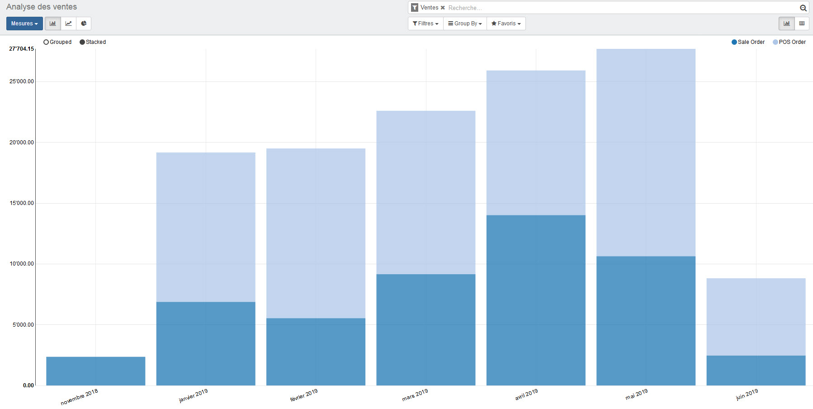

<section class="oe_container">
    <div class="oe_row oe_spaced">
        <h2 class="oe_slogan">Sales and Point of Sales Reports merged</h2>
        <h3 class="oe_slogan">The whole Sales reports in one place</h3>
        <div class="oe_span6 text-justify">
            <p class="oe_mt32">
                That modules adds Sales coming from Point of Sales in the Sales reports where the sale lines can be grouped by Type (Standard Sales Order or Pos Order).<br>
                The "Sales" button in product form view will also show the whole sales quantity and when you click on the button, you will get a mixed list of sale lines coming from both Sales Orders and Point of Sales Orders.
            </p>
        </div>
        <div class="oe_span6">
            
        </div>
    </div>
</section>
